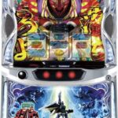
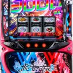
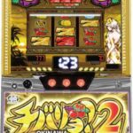
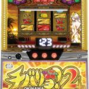
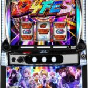
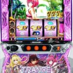

← 資料一覧 た行 タクトオーパス デスティニー OFF  Lダンバイン OFF Lダンベル何キロ持てる？ OFF  ダーリン・イン・ザ・フランキス OFF  チバリヨ２強天国狙い~大量実践値(2000万G)データと実践サンプルから考察~ OFF Lチバリヨ２ OFF  Lチバリヨ2プラス OFF 【期待値数万円越】アゲインモード突入契機考察とその狙い方 OFF Lチバリヨ2 実践的な狙い OFF Lてぃだどんどん OFF 鉄拳6 OFF 転生したら剣でした OFF  L D4DJ OFF デビル メイ クライ5 スタイリッシュトライブ OFF とある科学の超電磁砲2 OFF Lとある魔術の禁書目録 一方通行 アクセレーター OFF 東京リベンジャーズ OFF L ToLOVEるダークネス OFF  L ToLOVEるダークネス TRANCE ver.8.7 OFF Lトロピカーナ OFF L東京喰種 OFF L東京喰種【攻めたリセ狙い】 OFF 転生シャッター狙い実践データ OFF 北斗の拳 転生の章2 OFF